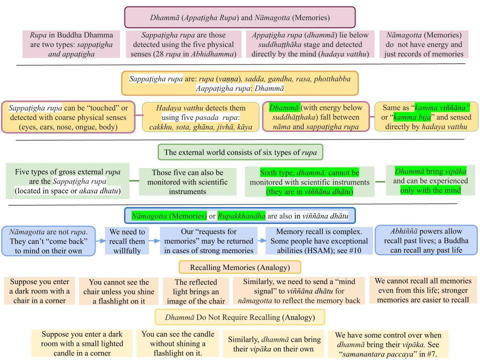

Rupa are two types: The 28 types of rupa are sappaṭigha rupa. Dhammā are appaṭigha rupa. Nāmagotta (rūpakkhanda) are not rupa.
May 20, 2023

Download/Print: "14. Dhammā (Appaṭigha Rupa) and Nāmagotta (Memories)."
Two Types of Rupa in Buddha Dhamma
1. In Buddha Dhamma, any rupa detected with the five physical senses is a "rupa." Those five types are rupa (vaṇṇa), sadda, gandha, rasa, and phoṭṭhabba. Note that a "visually-detected rupa is a "rupa rupa" (sometimes called "vaṇṇa rupa" to avoid confusion.) Thus, a tree or an animal is a "rupa rupa." The sound of a firecracker or someone's voice is due to a "sadda rupa." The smell of a flower is due to small fragrant particles emanating from the flower. The taste of salt is due to the salt molecules. The touch of a tree or a pencil is due to the solidity of that object.
- Those five types are rupa are made of suddhāṭṭhaka, the smallest "particle" in Buddha Dhamma. A hundred years ago, scientists thought everything in the world was made of atoms, but now they realize that atoms have internal structure.
- In fact, Einstein showed that no distinction can be made between particles and energy. Scientists were unable to distinguish between "particles" and "energy" when they started probing subatomic particles (those that make up the atoms.)
- However, the Buddha taught that a suddhāṭṭhaka is the smallest rupa that can be detected with the five senses. In Buddha Dhamma, energies below that of a suddhāṭṭhaka is a "dhammā." Such dhammā may be called "kamma bija" or "kamma viññāna" or even "patisandhi viññāna" depending on the context. They all have energies created by javana cittās that arise in the mind. Of course, there is no corresponding word in English for dhammā because the concept of a dhammā is not in science or common usage.
Science Deals with Only Five Dhātus
2. The five types of "dense" (olārika) rupa detectable by the five physical senses belong to the 28 types described in Abhidhamma. They are also called "sappaṭigha rupa."
- Dhammās have energies below that of a suddhāṭṭhaka; they are "subtle" (sukhuma) rupās that can be detected with only the mind; thus, they are called "appaṭigha rupa." They are not in the physical world (rupa aloka) but in nāma loka (viññāṇa dhātu.) Again, the idea of a nāma loka separate from the physical world (rupa loka) is not in science.
- Another way to see this categorization is as follows. The world is made of six dhātus: pathavi, āpo, tejo, vāyo, ākāsa, and viññāṇa. We are familiar with our “physical world” made of pathavi, āpo, tejo, and vāyo spread out in space (ākāsa dhātu.) Therefore, those five dhātu are associated with the rupa loka.
- The sixth, viññāṇa dhātu, is associated with the nāma loka. See #3 of "Nāma Loka and Rupa Loka – Two Parts of Our World."
- Therefore, there are SIX types of rupa in Buddha Dhamma. The sixth is dhammā which cannot be monitored with scientific instruments or the five physical senses. They can be detected only by the mind. Thus the name "appaṭigha rupa."
Rupa and Rupakkhandha
3. A "khandha" means a "collection." Rupakkhandha is not a "collection of rupa" but a "collection of mental imprints of external rupa."
- When you see a tree, only a "snapshot" of that tree is processed by the brain and sent to the hadaya vatthu (via cakkhu pasāda rupa.) The registration of that image in mind is vedanā, and recognition of that image as a tree is saññā. Thus, the registration of the tree in mind happens with the aid of vedanā and saññā. However, that "registration process" takes a collection of several such images, i.e., involves vedanākkhandha and saññākkhandha.
- Even if we don't realize it, multiple fast images are needed to get a "full picture" of the tree with saccadic eye movements. The lens in the eye automatically moves around to capture several "snapshots" within a second, and this saccadic eye movement is well-known to science; see “Saccade.” Thus, several such "snapshots" combine to give the image of the tree. When the object moves, things get even more complicated; see “Vision Is a Series of “Snapshots” – Movie Analogy.” What we "see" as a smoothly moving object is a mental construct! These are critical points needing deep contemplation (vipassanā.)
- Thus, the tree is recognized with vedanākkhandha and saññākkhandha. If no further "mind actions" take place, that vedanākkhandha and saññākkhandha are all that is recorded in viññāṇa dhātu. But that also includes saṅkhārakkhandha since vedanā/saññā are mano saṅkhāra!
How Memories Are Recorded in Viññāṇa Dhātu
4. The point is that rupakkhandha is not preserved as an "image" in the rupa loka. Rather the necessary information to recreate an image of a "rupa experienced in the past" is preserved in the nama loka or viññāṇa dhātu. See #6 of "Rupa and Rupakkhandha, Nāma and Nāmagotta."
- Thus, rupakkhandha is registered as the three aggregates of vedanā, saññā, and saṅkhāra in viññāṇa dhātu. Note that viññāṇakkhandha, in this case, comprises only vedanākkhandha, saññākkhandha, and saṅkhārakkhandha (with only mano saṅkhāra.)
- Thus, in this case, nāmagotta preserves a recording of the rupakkhandha. Only when we try to recall that memory that it COMES BACK to our mind as rupakkhandha that was experienced at that time, i.e., nāmagotta is not the same as rupakkhandha. Still, it comes back as rupakkhandha (corresponding to that time) when recalled. We discuss memory recall below.
- Again, to emphasize: what is preserved is vedanākkhandha, saññākkhandha, and saṅkhārakkhandha. But it contains all the necessary information to re-create a "mental image" of the rupa that was seen, i.e., the rupakkhandha.
Nāmagotta (Memories) With Kammic Energy Are Dhammā
5. Now, suppose instead of a tree, you see an attractive person, and lust arises in you. In this case, cetanā becomes sañcetanā (including kāma rāga) and is now more than a "seeing event." Now a "kamma viññāṇa" arises, and that involves abhisankhara. Therefore, drastic changes take place in both saṅkhārakkhandha and viññāṇakkhandha. Thus, the nāmagotta now has an associated kammic energy!
- Thus, now a memory of seeing that person is in viññāṇa dhātu, but, in addition, there is also an associated kamma bija, i.e., it is now a dhammā!
Viññāṇa Dhātu includes Records With and Without Kammic Energy
6. Therefore, memory records may or may not have associated kammic energy. Each sensory experience and our response to them are included in nāmagotta (all vedanā, saññā, saṅkhāra, and viññāna associated with every experience AND response).
- Some had embedded kammic energy when abhisaṅkhāra was involved, i.e., when kamma viññāna was involved. Those latter kinds are nāmagotta with energy, i.e., dhammā or "kamma bija."
- Those events without abhisaṅkhāra are mere "memory records," i.e., nāmagotta without energy.
How do we recall memories?
7. Since dhammā have energies, they can "come to a mind" on their own. That is how kamma bijās bring their vipāka. For example, suppose you hit someone and injured him last year. It was an incident, and a memory of it is in viññāṇa dhātu. But besides being a memory, it has kammic energy associated with it so that it can bring vipāka at some point. They bring vipāka under suitable conditions, and we have some control over that by being aware of that; see "Anantara and Samanantara Paccayā."
- Nāmagotta (records of memories) are also in viññāṇa dhātu, but they don't have any energy. Therefore, they don't come to our minds randomly. But we can willfully recall them. For example, consider another incident that also happened last year, say meeting a famous person and shaking his hand. That is only a memory because there is no kammic energy associated with it. But you can probably recall that incident. If someone tells you, "Didn't you meet that person last year?" you take a moment to recall it, and that memory comes back to your mind. That is a nāmagotta that came back as a dhammā when you tried to recall it.
8. When we try to recall a past event, the mind SENDS OUT a request to nāma lōka or viññāṇa dhātu. In other words, we must exert an effort to retrieve that memory.
- Depending on the strength of that “signal” sent out, it MAY reflect that particular memory back to our mind. If the strength of the "reflected signal" is enough, it is captured by the mind via “manañca paṭicca dhamme ca uppajjati manoviññāṇaṁ.” Thus, it comes back as a dhammā because it gained energy from the signal the mind sent out.
- Let me give an analogy to explain the difference between nāmagotta and dhammā.
Memory Recall - An analogy
9. Suppose we enter a dark room in a dark house with a chair sitting in a corner. We cannot see the chair or anything else in that room. That is the analogy of a nāmagotta that we are trying to recall.
- Now, if we had a flashlight, we could turn it on and direct it to the chair. Now, that light will bounce back from the chair, and we will be able to see it.
- That light beam from the flashlight is analogous to the “mind signal” we sent out to nāmalōka in #8 above.
- Now, let us consider an analogy for a dhammā. Suppose we enter the same dark room where a small lighted candle sits in a corner. We can see that lighted candle without the aid of a flashlight. Light from the candle itself is enough for us to see it. That lighted candle is like dhammā can “come back” to our minds on their own (as in #7)
Memory Recall Is Complex
10. Some ordinary people can recall events in their current lives in great detail. See, for example, "Recent Evidence for Unbroken Memory Records (HSAM)."
- Of course, there is a wealth of supporting data from all over the world on children being able to recall events from their previous lives; see "Evidence for Rebirth (with chart #3)." That would not be possible without those memory records permanently preserved in viññāṇa dhātu. Of course, Buddha Gotama was able to recall his own past lives and also those of many other Buddhas; see “Mahāpadāna Sutta (DN 14).“
- Those who cultivate higher jhānās and develop abhiññā powers can recall many past lives, for example. In the earlier analogy, this corresponds to having a “stronger flashlight.” A Buddha can recall as many past lives as he wishes.
- This is a fascinating subject. It is also an informative subject where one can gain insight.
Summary
12. There are two types of entities in the nāma lōka or viññāṇa dhātu: (i) dhammā with kammic energy and (ii) nāmagotta without energy.
- Dhammā can “come back” to our minds on their own. That is how kamma vipāka takes place. When the conditions are right, they bring vipāka.
- Nāmagotta CAN NOT come back on their own. If we want to recall something, we must forcefully recall that particular memory.
- Further details in "Difference Between Physical Rūpa and Rūpakkhandha," "Nāma Loka and Rupa Loka – Two Parts of Our World," "What are Rūpa? – Dhammā are Rūpa too!" and "Where Are Memories Stored? – Viññāṇa Dhātu."
All posts in the new section on “Buddhism – In Charts.”